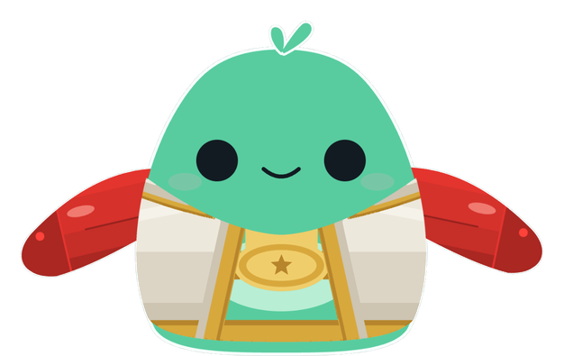
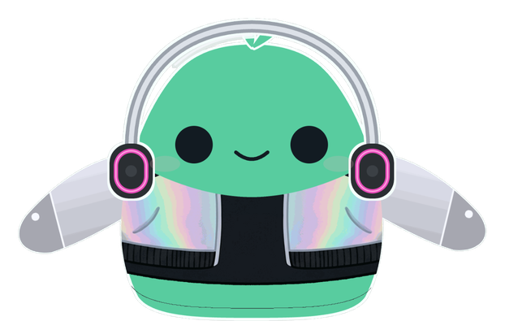
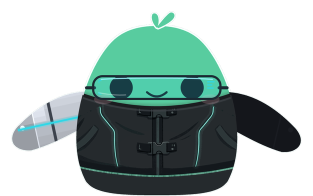
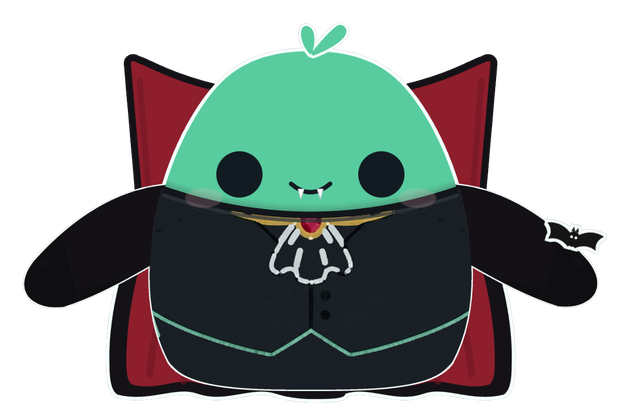
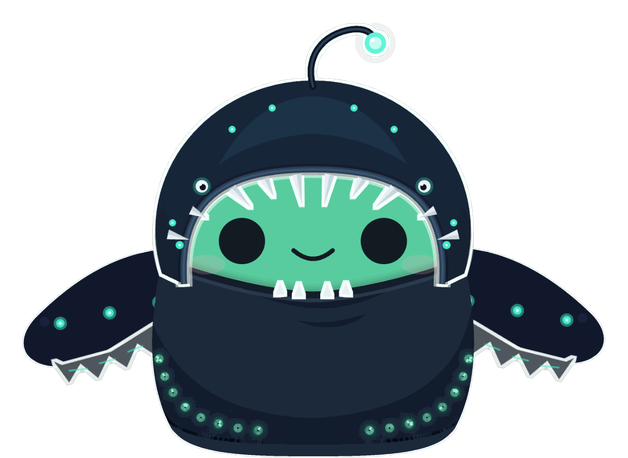

<title>Legendary Round Two</title>
<link rel="stylesheet" href="https://fonts.googleapis.com/css2?family=Nunito:wght@500;700;800;900&family=IBM+Plex+Mono:wght@400;500&display=swap">
<style>
  :root{
    --bg:#F4F2EE; --panel:#FFFFFF; --ink:#2E2622; --ink-2:#6B5D55; --muted:#95867D;
    --edge:#E4DFD7; --edge-soft:#EFEAE3; --mint:#57C79B; --coin:#E9A828; --coin-ink:#7A5200;
    --glow-champ:#E9A828; --glow-headliner:#E64AB8; --glow-netrunner:#2FD7E6; --glow-count:#C2283A; --glow-abyss:#2ED3B0;
    --sans:'Nunito',ui-rounded,-apple-system,'Segoe UI',sans-serif;
    --mono:'IBM Plex Mono',ui-monospace,'SF Mono',Menlo,monospace;
    --gut:clamp(20px,4vw,44px);
  }
  @media (prefers-color-scheme:dark){
    :root:not([data-theme="light"]){
      --bg:#151210; --panel:#201B17; --ink:#F3EDE6; --ink-2:#C4B7AD; --muted:#9B8D84;
      --edge:#372F29; --edge-soft:#2A2420; --mint:#6FD5AC; --coin:#F0BB55; --coin-ink:#FFE1A3;
    }
  }
  :root[data-theme="dark"]{
    --bg:#151210; --panel:#201B17; --ink:#F3EDE6; --ink-2:#C4B7AD; --muted:#9B8D84;
    --edge:#372F29; --edge-soft:#2A2420; --mint:#6FD5AC; --coin:#F0BB55; --coin-ink:#FFE1A3;
  }
  *{box-sizing:border-box}
  body{margin:0;background:var(--bg);color:var(--ink);font-family:var(--sans);font-size:16px;line-height:1.5;-webkit-font-smoothing:antialiased}
  main{max-width:1040px;margin:0 auto;padding:40px var(--gut) 72px}
  h1,h2,h3{margin:0;text-wrap:balance;font-weight:800;letter-spacing:-.01em}
  h1{font-size:clamp(30px,4.2vw,42px);line-height:1.1}
  h2{font-size:22px;margin-bottom:14px}
  p{margin:0}
  .eyebrow{font-family:var(--mono);font-size:12px;letter-spacing:.08em;text-transform:uppercase;color:var(--muted)}
  header{display:grid;gap:10px;margin-bottom:36px}
  header p.lead{max-width:62ch;color:var(--ink-2);font-size:17px}

  /* the rack today, as a strip of chips */
  .rack{display:flex;flex-wrap:wrap;gap:6px;margin:14px 0 6px}
  .chip{font-family:var(--mono);font-size:12px;padding:4px 9px;border:1px solid var(--edge);border-radius:999px;color:var(--ink-2);background:var(--panel)}
  .chip.leg{border-color:var(--coin);color:var(--coin-ink);background:color-mix(in srgb,var(--coin) 14%,var(--panel))}

  /* gap table */
  section{margin-top:44px}
  table{width:100%;border-collapse:collapse;font-size:15px}
  th,td{text-align:left;vertical-align:top;padding:11px 12px 11px 0;border-bottom:1px solid var(--edge)}
  th{font-family:var(--mono);font-size:12px;font-weight:500;letter-spacing:.06em;text-transform:uppercase;color:var(--muted)}
  td:first-child{font-weight:800;white-space:nowrap}
  td .t{font-family:var(--mono);font-size:12.5px;color:var(--ink-2)}
  td.new{font-weight:800;color:var(--coin-ink)}
  .tablewrap{overflow-x:auto}

  /* costume cards */
  .card{display:grid;grid-template-columns:300px 1fr;gap:28px;align-items:center;padding:28px 0;border-top:1px solid var(--edge)}
  .card:first-of-type{border-top:0}
  .art{position:relative;aspect-ratio:1;display:grid;place-items:center;isolation:isolate}
  .art::before{content:"";position:absolute;inset:8%;border-radius:50%;background:radial-gradient(circle,var(--glow) 0%,transparent 68%);opacity:.28;z-index:-1;filter:blur(6px)}
  .art img{width:92%;height:auto;display:block}
  .meta{display:grid;gap:12px}
  .name{display:flex;align-items:baseline;gap:12px;flex-wrap:wrap}
  .name h3{font-size:28px;font-weight:900}
  .tier{font-family:var(--mono);font-size:12px;letter-spacing:.06em;text-transform:uppercase;color:var(--coin-ink);background:color-mix(in srgb,var(--coin) 16%,var(--panel));border:1px solid var(--coin);padding:3px 9px;border-radius:999px;white-space:nowrap}
  .tag{font-size:19px;font-weight:700;color:var(--ink)}
  .row{display:grid;grid-template-columns:76px 1fr;gap:12px;align-items:baseline}
  .row .k{font-family:var(--mono);font-size:11.5px;letter-spacing:.07em;text-transform:uppercase;color:var(--muted);padding-top:3px}
  .row .v{color:var(--ink-2)}
  .moves{display:flex;flex-wrap:wrap;gap:6px}
  .moves span{font-family:var(--mono);font-size:12.5px;padding:4px 9px;border-radius:8px;background:var(--edge-soft);color:var(--ink)}
  .ult{display:grid;grid-template-columns:76px 1fr;gap:12px;align-items:baseline;padding:12px 14px;border-radius:12px;background:color-mix(in srgb,var(--coin) 10%,var(--panel));border:1px solid color-mix(in srgb,var(--coin) 50%,var(--edge))}
  .ult .k{font-family:var(--mono);font-size:11.5px;letter-spacing:.07em;text-transform:uppercase;color:var(--coin-ink)}
  .ult b{color:var(--ink)}

  /* notes */
  .notes{display:grid;gap:10px;max-width:70ch;color:var(--ink-2)}
  .notes li{margin:0}
  .notes ul{margin:0;padding-left:20px;display:grid;gap:8px}

  @media (max-width:720px){
    .card{grid-template-columns:1fr;gap:12px}
    .art{max-width:320px;margin:0 auto}
    .row,.ult{grid-template-columns:1fr;gap:4px}
  }
  @media (prefers-reduced-motion:no-preference){
    .art img{transition:transform .35s cubic-bezier(.2,.8,.2,1)}
    .card:hover .art img{transform:translateY(-4px)}
  }
</style>

<main>
  <header>
    <span class="eyebrow">Sprout · stage III wardrobe · 2026-09-11</span>
    <h1>Five more legendaries, aimed at 18 to 24</h1>
    <p class="lead">The rack has 19 costumes and four legendaries. Each new one below fills a lane the rack is thin in, and each has a bigger ult than the five moves under it. Built the same day: every still below is the live rig wearing the cut art, captured the way the Wardrobe captures it. Moves and ults are still base emotes.</p>
    <div class="rack">
      <span class="chip">Hoodie</span><span class="chip">Flannel</span><span class="chip">Barista</span>
      <span class="chip">Blazer</span><span class="chip">Varsity</span><span class="chip">Pajamas</span><span class="chip">Keynote</span>
      <span class="chip">Happi</span><span class="chip">Idol</span><span class="chip">Racer</span><span class="chip">Ballet</span><span class="chip">Hanbok</span>
      <span class="chip">Biker</span><span class="chip">Astronaut</span><span class="chip">Monster</span>
      <span class="chip leg">Ninja</span><span class="chip leg">Sorcerer</span><span class="chip leg">Grad</span><span class="chip leg">Hex</span>
    </div>
    <span class="eyebrow">Gold chips are the legendary tier today · 1200 coins</span>
  </header>

  <section>
    <h2>Where the rack is thin</h2>
    <div class="tablewrap">
    <table>
      <thead><tr><th>Lane</th><th>On the rack now</th><th>The hole</th><th>New</th></tr></thead>
      <tbody>
        <tr><td>Compete</td><td><span class="t">Varsity 300 · Racer 500</span></td><td>No fighter, and nothing at legendary. Men 13 to 25 lean competition; it is what keeps them (Duolingo 50/50 vs Finch 75% women).</td><td class="new">Champ</td></tr>
        <tr><td>Music</td><td><span class="t">Idol 500</span></td><td>A pop performer, no music maker. Going-out culture for 18 to 24 is DJ culture, and it is both genders.</td><td class="new">Headliner</td></tr>
        <tr><td>Gaming</td><td><span class="t">Hoodie 150</span></td><td>The only gamer is the cheapest costume. Nothing cyber, nothing for the anime crowd past Ninja.</td><td class="new">Netrunner</td></tr>
        <tr><td>Dark</td><td><span class="t">Hex 1200 · Monster 800</span></td><td>Cute-goth and kaiju. No elegant-dark. Romantasy is the biggest 18 to 24 women's culture right now, and Halloween lands in the launch window.</td><td class="new">Count</td></tr>
        <tr><td>The tank</td><td><span class="t">nothing</span></td><td>Sprout is a fish and the tank is the whole world, but no costume is about that. Creepy-cute is the Labubu edge lane the research said we lack.</td><td class="new">Abyss</td></tr>
      </tbody>
    </table>
    </div>
  </section>

  <section>
    <h2>The five</h2>

    <article class="card" style="--glow:var(--glow-champ)">
      <div class="art"></div>
      <div class="meta">
        <div class="name"><h3>Champ</h3><span class="tier">Legendary · 1200</span></div>
        <p class="tag">Undefeated. Ask anyone.</p>
        <div class="row"><span class="k">Pieces</span><span class="v">White satin robe with gold trim, hood down. Gold title belt on the belly. Red gloves on both fin tips, tape at the wrists.</span></div>
        <div class="row"><span class="k">Fills</span><span class="v">The competition lane at legendary. The first fighter on the rack.</span></div>
        <div class="row"><span class="k">Moves</span><div class="moves"><span>Jab</span><span>Guard up</span><span>Ring walk</span><span>Shadowbox</span><span>Bell</span></div></div>
        <div class="ult"><span class="k">Ult</span><span><b>Knockout.</b> A flurry, then one big hook. The tank shakes, a white KO flash, the bell rings, confetti.</span></div>
      </div>
    </article>

    <article class="card" style="--glow:var(--glow-headliner)">
      <div class="art"></div>
      <div class="meta">
        <div class="name"><h3>Headliner</h3><span class="tier">Legendary · 1200</span></div>
        <p class="tag">Never leaves before the drop.</p>
        <div class="row"><span class="k">Pieces</span><span class="v">Chrome headphones with a magenta light ring on each cup. Holographic bomber over a black tee. One glowing wristband.</span></div>
        <div class="row"><span class="k">Fills</span><span class="v">Music maker and nightlife. Idol is pop; this is the set at 2am. Both genders.</span></div>
        <div class="row"><span class="k">Moves</span><div class="moves"><span>Cue</span><span>Hands up</span><span>Scratch</span><span>Crowd point</span><span>Fader</span></div></div>
        <div class="ult"><span class="k">Ult</span><span><b>The Drop.</b> The tank dims. Four bars of build, bouncing bigger each bar. Strobe, two beams sweep the tank, bass rings ripple out from him.</span></div>
      </div>
    </article>

    <article class="card" style="--glow:var(--glow-netrunner)">
      <div class="art"></div>
      <div class="meta">
        <div class="name"><h3>Netrunner</h3><span class="tier">Legendary · 1200</span></div>
        <p class="tag">Already patched it.</p>
        <div class="row"><span class="k">Pieces</span><span class="v">Black techwear jacket, tall collar, cyan seams, two chest straps. Translucent HUD visor over the eyes. Chrome cyber sleeve on one fin.</span></div>
        <div class="row"><span class="k">Fills</span><span class="v">Gaming at legendary, and the Edgerunners and Cyberpunk anime crowd. The glow is built for the dark tanks.</span></div>
        <div class="row"><span class="k">Moves</span><div class="moves"><span>Boot</span><span>Jack in</span><span>Glitch step</span><span>Scan</span><span>Reboot</span></div></div>
        <div class="ult"><span class="k">Ult</span><span><b>Overclock.</b> The tank goes black. He splits into a cyan ghost and a magenta ghost, dashes the width of the tank three times, a data burst, and snaps back to one.</span></div>
      </div>
    </article>

    <article class="card" style="--glow:var(--glow-count)">
      <div class="art"></div>
      <div class="meta">
        <div class="name"><h3>Count</h3><span class="tier">Legendary · 1200</span></div>
        <p class="tag">Up all night anyway.</p>
        <div class="row"><span class="k">Pieces</span><span class="v">Lugosi collar, tall stiff panels either side of the head, and a full cape behind him with the crimson lining facing out and a bat-wing hem. Waistcoat with a ruffled cravat, ruby brooch. Two fangs. A bat on one fin.</span></div>
        <div class="row"><span class="k">Fills</span><span class="v">Elegant-dark, the lane Hex's bows do not cover. Vampires are the 2025 to 2026 moment (Sinners, Nosferatu, romantasy). Candidate for an October-only drop.</span></div>
        <div class="row"><span class="k">Moves</span><div class="moves"><span>Cape sweep</span><span>Fangs</span><span>Hiss</span><span>Hover</span><span>Mist</span></div></div>
        <div class="ult"><span class="k">Ult</span><span><b>Nightfall.</b> The tank goes crimson. He scatters into a swarm of bats, they circle the tank once, and re-form in a cape flare.</span></div>
      </div>
    </article>

    <article class="card" style="--glow:var(--glow-abyss)">
      <div class="art"></div>
      <div class="meta">
        <div class="name"><h3>Abyss</h3><span class="tier">Legendary · 1200</span></div>
        <p class="tag">Lives where the light doesn't.</p>
        <div class="row"><span class="k">Pieces</span><span class="v">Anglerfish head worn as a hood, built like the Monster's: needle teeth arch over the brow, the face sits in the mouth, tiny eyes above the lip, the lure off the snout. Midnight suit with teal glow dots, jagged fin frills.</span></div>
        <div class="row"><span class="k">Fills</span><span class="v">The only costume about being a fish, and the one no other app can copy. Creepy-cute edge. Pairs with the Deep Sea theme on the site.</span></div>
        <div class="row"><span class="k">Moves</span><div class="moves"><span>Lure bob</span><span>Lights on</span><span>Lurk</span><span>Gulp</span><span>Drift</span></div></div>
        <div class="ult"><span class="k">Ult</span><span><b>Lights Out.</b> The tank goes black. Only the lure glows, drifting slowly. Then every dot flashes on at once and a teal ring ripples out to the glass.</span></div>
      </div>
    </article>
  </section>

  <section>
    <h2>What this costs and what could go wrong</h2>
    <div class="notes">
      <ul>
        <li>Built through the fit pipeline: body art cut from the approved concept renders (the Gemini prepay ran dry before a template paint could run; Champ's robe is drawn flat instead), sleeves synthesised, head and back pieces as vectors. 30 imagesets installed, the five are in the iOS Wardrobe.</li>
        <li>Still owed: 5 acts plus an ult each in <code>acts.ts</code> and their Lottie effect files. The acts are more work than the clothes.</li>
        <li>Netrunner and Abyss are glow costumes. On the light tanks the glow goes flat. They will look best on Lagoon and the darker themes, and the shop preview should show them there.</li>
        <li>Count's collar and cape live in a new <code>#costume-back</code> slot behind the body, the first piece any costume has had back there. Abyss's hood is a closed ring that hides the tuft.</li>
        <li>Champ's gloves hide the fin tips, so held-prop moves are out for it. Every move above uses the body or the gloves.</li>
        <li>Palette check across the tier: Champ is the first white legendary, Count the first crimson, Abyss the first navy. Netrunner and Headliner are both black-with-neon; Headliner's holographic jacket is what keeps them apart at swatch size.</li>
      </ul>
    </div>
  </section>
</main>
